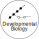

Taking apart pediatric cancer bit by bit
Goals
It is our goal to understand developmental processes in cancer biology. We track development in selected model cancers and characterize (epi)genomic changes that occur in time and space. With these data, we aim to decipher the syntax and semantics of development by formal abstraction into intelligible models, and by reconstruction in tractable experimental systems. To this end, we combine developmental and cancer biology with functional genomics, data analytics, and mathematics. There are three aspects of development that are currently at the heart of our interest: Intra-tumor plasticity, the formation of metastases, and the influence of non-tumor cells on these processes.
 +  + = !
+ = !
Significance
Cancer is a disruption of orderly developmental processes – cancerous cells either fail to reach the destination of their developmental circuit or they revert after they had seemingly completed the track. By achieving a thorough understanding in individual cases and abstracting the findings in quantitative models, we help to elucidate new avenues for detecting (diagnosis), projecting (prognosis), and interfering (therapy) with aberrant development in pediatric cancers.
Current projects & funding (examples):
ALSF Crazy 8 Intiative
Together with our colleagues we aim to discover the origins of bone sarcomas and develop tumor models for this deadly pediatric cancer. More info and press releases: Alex's Lemonade Stand Foundation, CCRI, ORF (in German).
WWTF COVID-19 Rapid Response
Joining colleagues from CCRI and the Medical University of Vienna, we investigate immune responses to SARS-CoV-2 infections. More info and press releases: WWTF.

St. Anna Kinderkrebsforschung
With the generous support of the supporters of St. Anna CCRI, we investigate the developmental origins of pediatric solid tumors and hematopoietic malginancies.
Recent projects:

SARS-CoV-2 mutations
Our small contribution to the ongoing pandemic: We teamed up with researchers at CeMM and the Medical University of Vienna to investigate the effect of SARS-CoV-2 mutations on CD8+ T cell immunity.
Read the paper Get the code / data
Intra-tumor plasticity
Langerhans cell histiocytosis (LCH) is an enigmatic neoplasm with highly variable clinical presentation and severity. Our new study together with CeMM charts molecular heterogeneity in LCH at single-cell resolution and unravels an unexpected hierarchy.
Read the paper Get the code / data
Finding enhancers
Enhancers are genetic elements that regulate gene expression. Our recent study in collaboration with researchers from Edinburgh and Rotterdam used a genome-wide assay to explore enhancer activity in human ESCs.
Read the paper Get the code / data
Kinases & blood
Cellular development is shaped by the enzymatic activity of kinases. Two of our recent contributions implicate MAPK in blood stem cell activation, and JAK and Aurora kinases in mutant immune cells -- with impacts on the transcriptome and epigenome.
MEKi & HSCs STAT5 Neoplasia
Epigenetics of hematopoiesis
The hierarchical development of the human blood system is a highly intricate and fascinating process. Within the Blueprint consortium, we charted a map of the epigenetic changes occurring during hematopoiesis using DNA methylation profiling.
Read the paper Get the data
Macrophage development
Tissue-resident macrophages are key elements of the immune system and important for organismal development and homeostasis. We teamed up with researchers from New York and Bonn to trace back the specification of these cells to embryonic progenitors.
Read the paper Get the dataBiomarker benchmark
DNA methylation is a stable epigenetic mark that lends itself for use in biomarker assays. We conducted a large benchmark study -- involving 16 research labs worldwide -- to compare candidate technology platforms for clinical translation.
Read the paper Get the code
Regulation of pluripotency
We have investigated the regulators of mammalian pluripotency to discover what makes ESCs tick.
Esrrb Oct4/Nanog Sox2/Oct Sox2/Nanog Sox Esrrb-loss
Streamlined NGS analysis
To ease access and reuse of functional genomics data, we developed a web-based software suite and database that streamlines NGS data analysis.
Read the paper Read the other paper